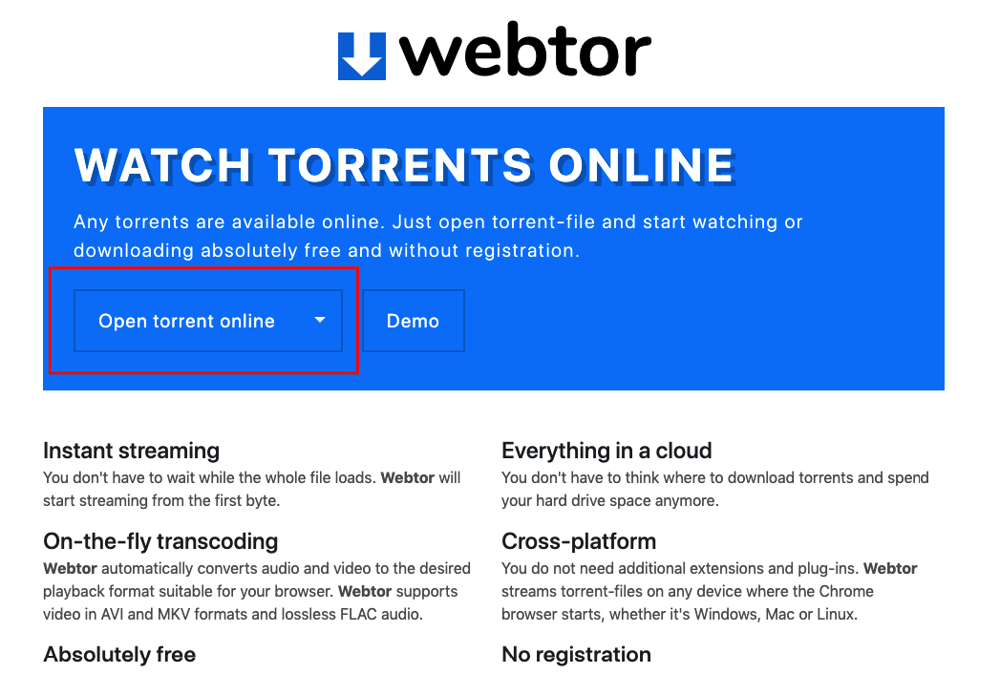

Yts.am (or yts.lt) is specialized in movie releases and has really good catalog to choose from.
Every single movie has trailer, poster and description. Also it is possible to choose
quality of the content (720p or 1080p, BluRay or Web).
There are few simple steps to start watch movie online without need of download:
Go to the movie page.
Click green download button under the main poster.
Click download one more time in the opened popup window under desired quality.
You should see downloaded torrent file in your browser.
Click “Open torrent online” button and choose your downloaded torrent file. 
After that you will see content of the torrent file.
Click on the movie file (it has .mp4 extension) and wait for a little before playback begins.
PS: You can skip steps (4-6) if you install webtor chrome extension.
Unluckily this extension doesn’t handle torrent downloads from yts.am and you should click magnet-link instead.
And it will take some time (up to a minute or so) to gather torrent content from peers (be patient).
Please follow this guide to make extension fully compatible
with yts.am
PPS: As you can see content on step 2 and 8 differs. There were no peers to start instant streaming, so I had to choose another movie.